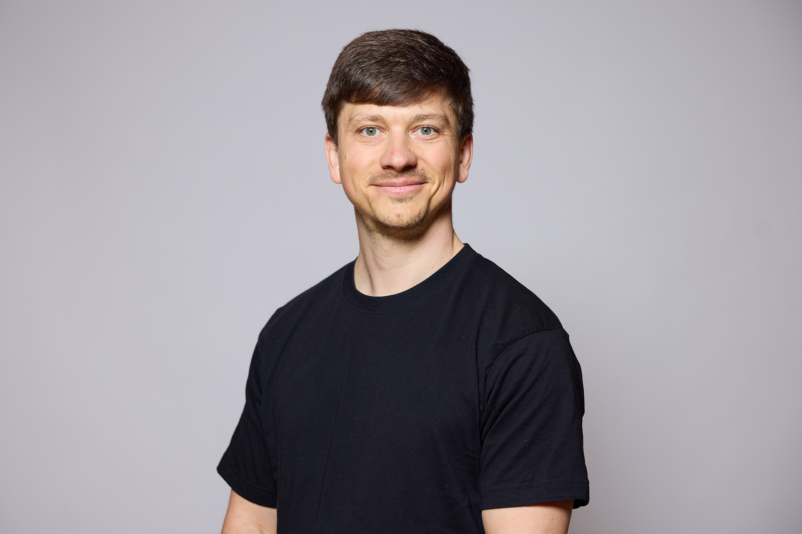

Data Science, Analytics & Engineering
Master Data Science graduate with 3+ years' experience optimizing data workflows, managing PostgreSQL databases, and ensuring high data quality in fast-paced environments.
01 — About
I came as a Kitchen chef in Switzerland nearly 10 years ago, learning to handle chaos, stay organized, and get things done right. That experience taught me about constantly improving systems and step perfect efficiency.
Then COVID-19 hit, and kitchens closed. It didn't mean I stopped trying new things. I started with self taught web development bootcamp and soon found the Master's studies of Applied Information and Data Science at Lucerne University of Applied Sciences and Arts.
Now at LubioScience, I manage a portfolio of over 10 million items, build Flask apps for data quality, and create tools that transform PostgreSQL data for universities and buyers. My approach is simple: clean the data, organize it, and build reliable systems. I fix bottlenecks and messy processes, just like troubleshooting a busy kitchen.
I have a Master's in Data Science from Lucerne University (2025) and a Bachelor's in Business from Vilnius University (2011). Languages: Lithuanian (native), English (fluent), German (improving).
Outside work, I've been in the Scouts since 1996, doing outdoor activities and leadership. I enjoy gym, snowboarding, hiking, biking, running, mushroom hunting, and playing guitar and bass.

02 — Skills & Stack
Programming Languages
Web Development
Databases
Tools & Platforms
Data Skills
Certifications
03 — Projects
PROJECT · 001 · FLAGSHIP
Master Thesis – Data Quality Control Web Application
Designed and deployed a full-stack Flask application to automate supplier data integration and quality control for life-science catalogues. The system supports multi-format Excel/XML ingestion, schema mapping, automated validation, PostgreSQL storage, and export into procurement platforms (Jaggaer, Axiom, eMolecules, UNIL/EPFL). Features include multiprocessing for large datasets, interactive dashboards, and demo deployment on Render.
PROJECT · 002
DevOps – Git, Docker & Software Engineering in Python
Collaborated with a team using Git and Jira to plan and develop Brändi Dog game; containerized the app with Docker and deployed it to Google Cloud Platform.
PROJECT · 003
Generative AI
Developed a chatbot using Ollama Mistral and deployed a Streamlit app allowing users to ask questions about the Verkehrshaus Luzern (Swiss Museum of Transport).
PROJECT · 004
Big Data in the Cloud
Designed and implemented data storage and processing pipelines on Azure for the Digitalization of European Power Consumption project, with data given by the Swiss Federal Office of Energy.
04 — Experience
– Present
60% Hybrid
Data Manager
LubioScience, Zurich
Overseeing and maintaining a dynamic product portfolio of 9+ million items. Developing a Flask-based application to automate and enhance data quality control, a core component of my master's thesis. Contributed to the development team of a tool that extracts and transforms data from a PostgreSQL database into various formats, enabling seamless data integration for major universities in Switzerland. Streamlining product updates by transforming Excel, XML, and HTML data into standardized templates for seamless webshop integration. Automating daily workflows using Python, optimizing web scraping, data collection, and quality control processes.
– October 2023
Full-time
Kitchen Chef & Cook
Various Locations (Switzerland, Norway, Lithuania)
Professional kitchen coordination in a high-pressure environment, ensuring process consistency.
– May 2014
Full-time
Front Desk Team Member
Vilnius Tourism Information Center & Convention Bureau (Lithuania)
Provided information and support to tourists and visitors in a busy tourism center.